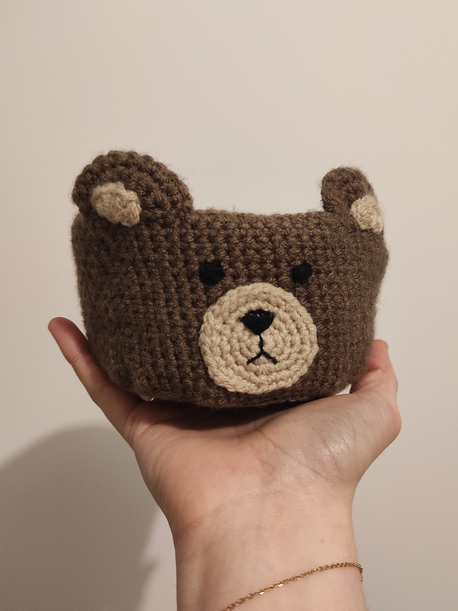
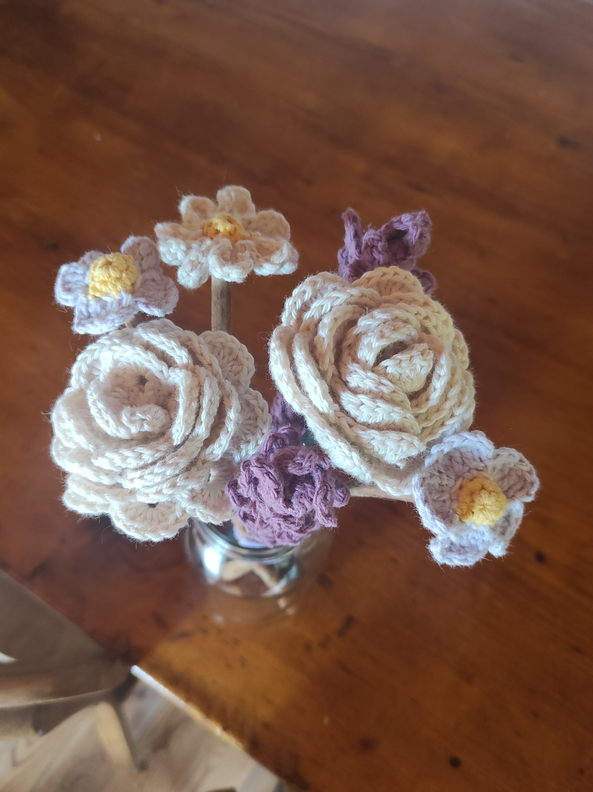
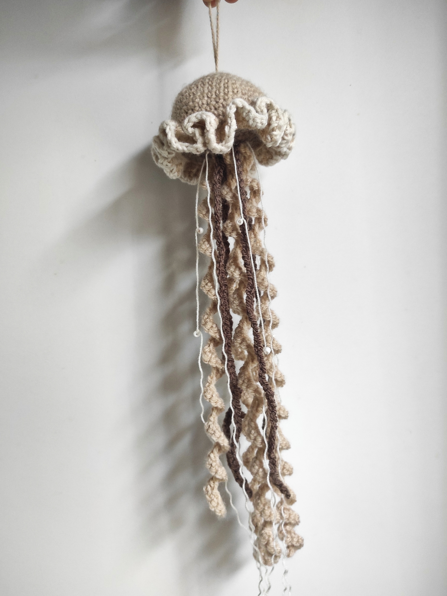

Crochet
- Depuis 4 ans
- Pratique : Quotidienne
- Moi et le crochet en quelques mots :
- Le crochet est une technique artisanale qui permet de confectionner toutes sortes d'ouvrages en mailles (des vêtements, des peluches, des couvertures,.).
Je pratique le crochet de manière régulière. Dès que j'ai du temps libre, je pratique. C'est un passe-temps que je fais pour me créer des pièces mais également comme cadeaux pour mes proches.
Mes photos :


